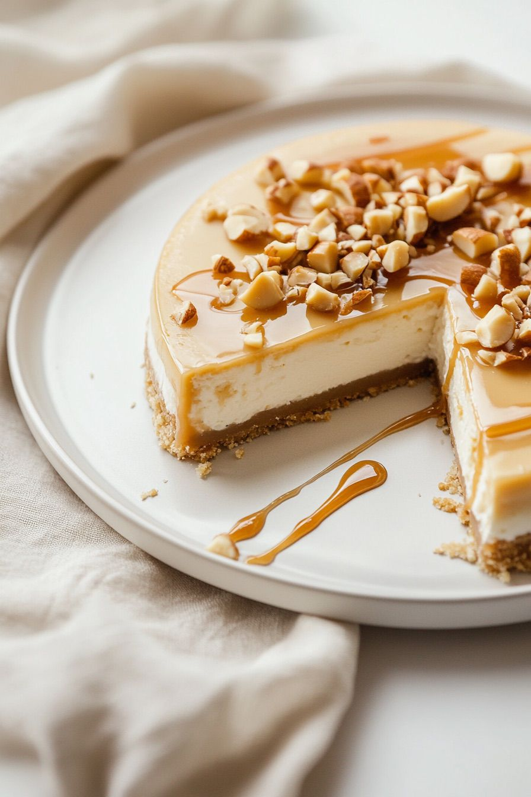
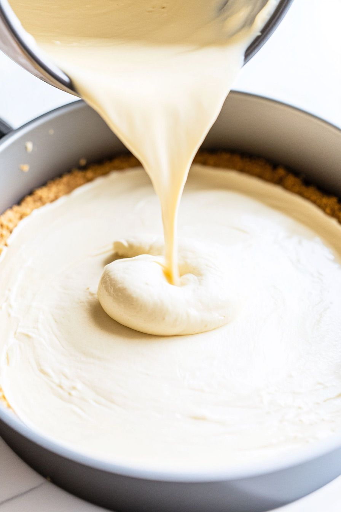
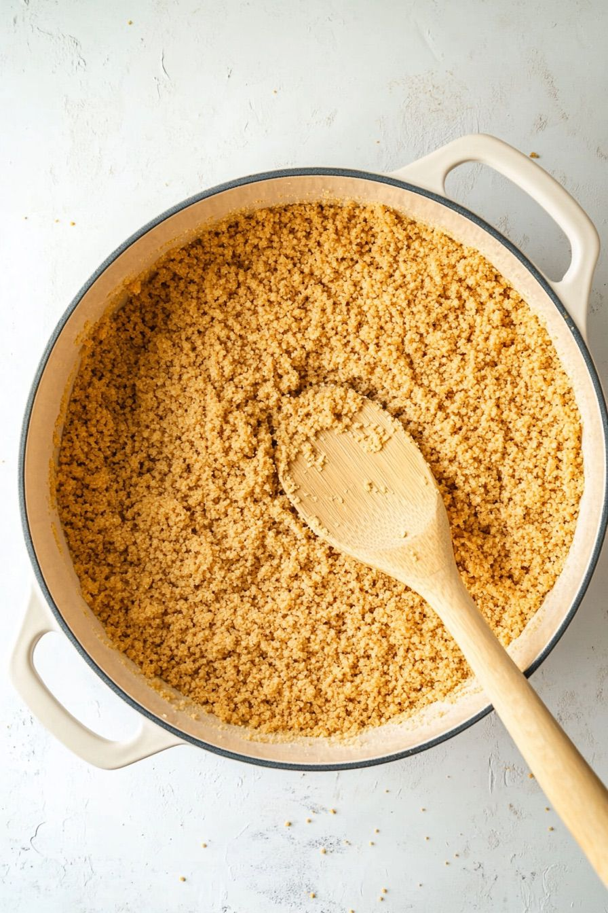
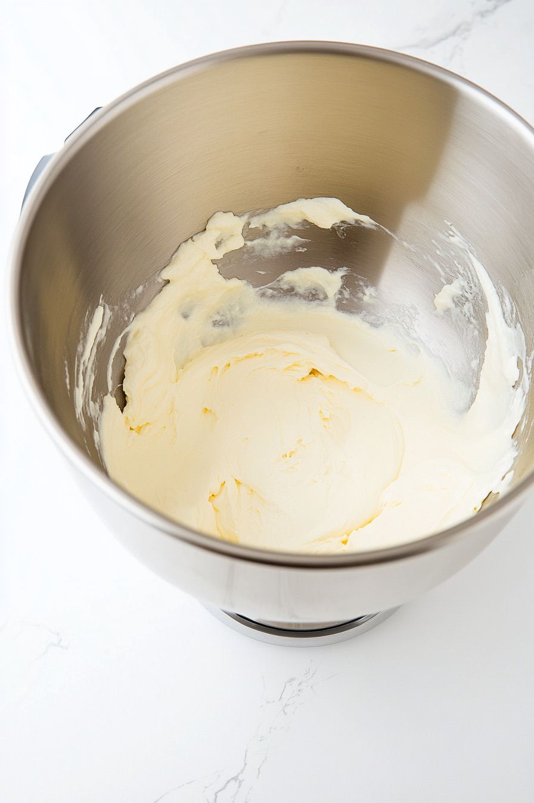
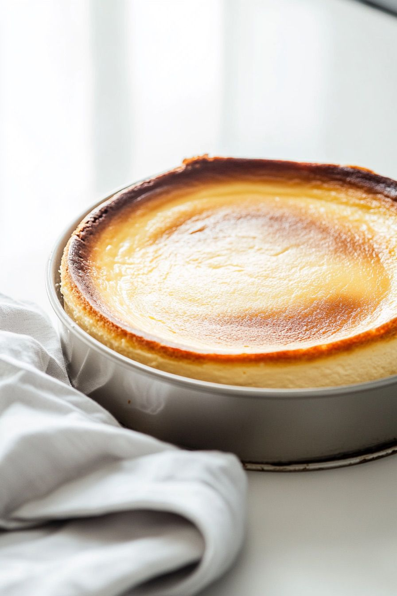

Uma receita que transforma a macadâmia em experiência. Base crocante com farelo de macadâmia, recheio cremoso de cream cheese e cobertura de caramelo salgado com brittle crocante por cima.
Simples de fazer, impossível de esquecer. Sirva gelado para realçar a textura e o contraste entre o caramelo quente e o recheio firme.

Triture a bolacha maisena até virar farinha. Derreta a manteiga e misture com a bolacha triturada. Se quiser mais crocância, adicione farelo de macadâmia. Forre com a massa o fundo de uma forma de fundo removível e reserve.

Bata o cream cheese com o açúcar até ficar cremoso. Acrescente a baunilha, o suco de limão e os ovos um a um, batendo até incorporar completamente. Despeje o recheio sobre a base.

Asse a 150°C por 60 a 70 minutos — o centro deve ficar levemente tremido. Deixe esfriar completamente antes de colocar na geladeira por pelo menos 2 horas antes de servir.

Para o caramelo: derreta o açúcar com a manteiga em fogo médio, adicione o creme de leite e misture até ficar liso. Para o brittle: derreta o açúcar, adicione a macadâmia picada, misture e espalhe sobre papel manteiga. Depois de frio, quebre em pedaços.
Desenforme o cheesecake gelado. Cubra com o caramelo. Finalize com o brittle de macadâmia crocante por cima. Sirva bem gelado.
Use a Macadâmia Tipo 4 para o brittle e o farelo da base — as metades picam mais uniformemente e incorporam melhor na receita. Para a cobertura, o Tipo 2 dá um acabamento mais rústico e bonito.
Tipo 4 para o brittle · Tipo 2 para a cobertura